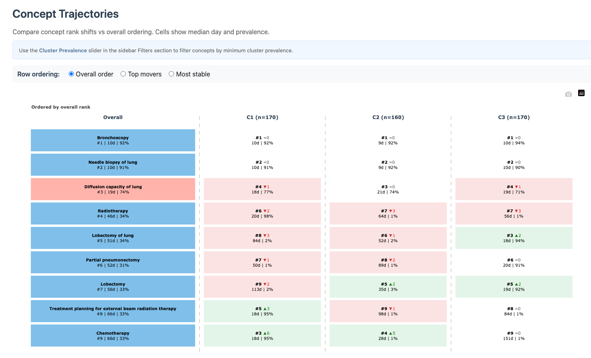

Introduction
The Trajectories tab compares concept ordering patterns across clusters using median occurrence timing and prevalence.
To illustrate the timing data behind this tab, the next chunk
extracts the first recorded event day for each concept occurrence and
summarizes the most common concepts in the bundled lc500
study.
if (requireNamespace("nanoparquet", quietly = TRUE)) {
studyDir <- system.file("example", "st", package = "CohortContrast")
study <- CohortContrast::loadCohortContrastStudy("lc500", pathToResults = studyDir)
firstEventDay <- function(x) {
values <- strsplit(as.character(x), ",")[[1]]
as.numeric(trimws(values[1]))
}
patientData <- study$data_patients
patientData$FIRST_TIME_TO_EVENT <- vapply(
patientData$TIME_TO_EVENT,
firstEventDay,
numeric(1)
)
conceptCounts <- sort(table(patientData$CONCEPT_NAME), decreasing = TRUE)
topConcepts <- names(conceptCounts)[1:5]
trajectoryPreview <- patientData[patientData$CONCEPT_NAME %in% topConcepts, ]
aggregate(
FIRST_TIME_TO_EVENT ~ CONCEPT_NAME,
data = trajectoryPreview,
FUN = median
)
}
#> CONCEPT_NAME FIRST_TIME_TO_EVENT
#> 1 Bronchoscopy 10
#> 2 Inpatient Visit 37
#> 3 Malignant tumor of lung 5
#> 4 Needle biopsy of lung 10
#> 5 Outpatient Visit 23This is a simplified version of the temporal information the Trajectories tab uses for concept ordering comparisons across clusters.

Trajectories tab
Controls
-
Row ordering:
-
Overall order: ranked by overall timing. -
Top movers: emphasizes concepts whose ordering shifts most across clusters. -
Most stable: emphasizes concepts with minimal ordering drift.
-
- Cluster Prevalence (%) (sidebar): when a specific cluster is selected, filters concepts by minimum within-cluster prevalence.
Interpretation
- Concepts that move strongly between clusters can indicate cluster-defining care pathways.
- Concepts with stable ordering are useful anchors for comparing trajectories across cohorts/studies.
- Use this tab together with Dashboard: keep only clinically relevant concepts active, then inspect temporal ordering stability.